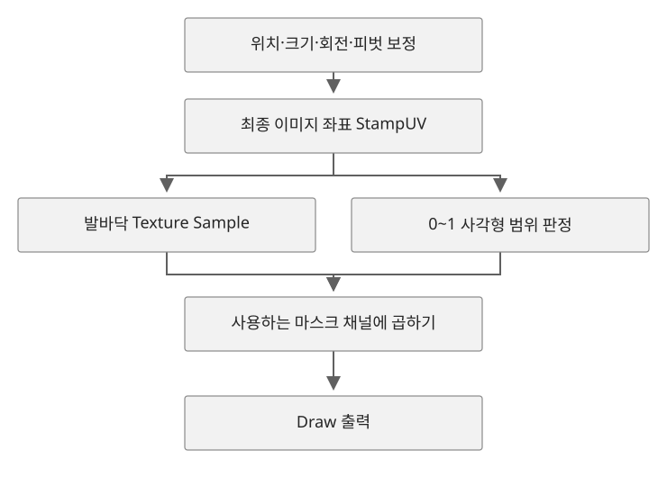

발자국 좌표·회전·범위 마스크
발자국 구현에 사용한 좌표 계산을 자세히 풀어 쓴 자료다. 머트리얼 노드로 구현했으며, 아래 HLSL은 계산 순서를 설명하는 예제다.
A. 좌표 계산 — 월드 접점에서 발바닥 이미지까지#
발이 닿은 위치와 이미지에서 읽을 위치를 모두 ‘UV’라고 부르면 계산을 혼동하기 쉽다. 아래 표에서는 각 값의 역할이 드러나도록 이름을 나눴다. Origin, WorldSize, DrawLocation, BrushSize는 노드 설명에 맞췄고, 중간 계산값에도 의미를 알 수 있는 이름을 붙였다.
| 이름 | 의미 | 기준 |
|---|---|---|
HitLocation | 바닥 트레이스의 월드 접점 XY | 월드 길이 단위 |
Origin | RT가 표현하는 표면 영역의 중심 XY | HitLocation과 동일한 좌표계 |
WorldSize | 영역의 전체 가로·세로 길이 | 반길이가 아닌 전체 길이 |
DrawLocation | 접점을 그리기 영역의 UV로 변환한 값 | 영역 내부는 0~1 |
TexCoord | Draw Material이 계산 중인 그리기 영역의 UV | 기본 타일링 1 기준 |
BrushSize | 발바닥 이미지 사각형의 월드 크기 | WorldSize와 동일한 길이 단위 |
BrushUVSize | 이미지 사각형 크기를 영역 크기로 나눈 UV 비율 | BrushSize / WorldSize |
BrushLocalUV | 발 접점을 중심 0으로 둔 이미지 좌표 | 음수와 양수 포함 |
StampUV | 원본 발바닥 텍스처에 넣는 최종 샘플 UV | 이미지 내부는 0~1 |
A.1 월드 접점을 그리기 영역의 UV로 변환#
다음 식은 수평으로 놓인 직사각형 표면에서 월드 XY와 UV 축이 일치할 때를 설명한다. 표면은 회전하지 않은 상태다.
DrawLocation = (HitLocation − Origin) / WorldSize + 0.5월드 위치에서 중심 Origin을 빼면 표면 중앙이 0이 된다. 이를 전체 길이인 WorldSize로 나누면 영역 안의 상대 위치를 비율로 나타낼 수 있다. 마지막으로 0.5를 더해 중앙을 UV (0.5,0.5)로 옮긴다.
BP에서는 Actor Bounds의 BoxExtent × 2로 WorldSize를 구했다. 프리뷰 기본값과 BP가 실행 중 전달하는 값은 구분해야 한다. 초기 그래프에서는 중심이 0인 DrawLocation에 TexCoord − 0.5를 함께 쓰기도 했다. 이 방식에 위 식을 섞으면 중심 보정이 중복된다.
이 절에서는 DrawLocation을 0~1 기준으로 맞춰 설명했다. Actor Bounds만으로 회전된 메쉬나 복잡한 메쉬의 UV까지 구할 수 있다는 뜻은 아니다.
A.2 발바닥 크기를 영역 대비 비율로 변환#
BrushUVSize = BrushSize / WorldSize
BrushLocalUV = (TexCoord − DrawLocation) / BrushUVSizeTexCoord − DrawLocation은 발 접점과 현재 위치의 차이다. 이를 이미지 크기의 UV 비율인 BrushUVSize로 나누면 작은 발자국 영역 안에 원본 이미지 전체를 그릴 수 있다.
한 축의 전체 길이가 100cm, 이미지 사각형이 20cm라면 BrushUVSize=0.2다. 접점에서 10cm 떨어진 위치의 UV 차이는 0.1이다. 이를 0.2로 나누면 0.5가 되어 이미지 폭의 절반을 나타낸다. 설명을 위한 예시다.
BrushSize는 여백을 포함한 이미지 사각형 전체 크기다. 발 그림이 이미지 길이의 80%를 차지한다면 BrushSize를 28cm로 설정해도 보이는 발 모양은 22.4cm다. 발 크기를 맞출 때는 이미지 안에서 발 그림이 차지하는 비율이나 실제 표시된 길이를 함께 확인해야 한다. 이 수치는 설명용이며 캐릭터의 발을 측정한 값은 아니다.
A.3 발 접점에 이미지 중앙 맞추기#
StampUV = BrushLocalUV + float2(0.5, 0.5)발 접점에서는 TexCoord=DrawLocation이므로 BrushLocalUV가 (0,0)이다. 원형 브러시는 이 0에서부터 거리를 계산하지만, 이미지의 중앙 주소는 (0.5,0.5)다. 마지막 보정으로 발 접점에서 이미지 모서리 대신 중앙을 읽게 한다.
한 축에서 DrawLocation=0.5, BrushUVSize=0.2인 경우:
영역 UV TexCoord | 접점 기준 좌표 BrushLocalUV | 최종 이미지 UV StampUV | 의미 |
|---|---|---|---|
| 0.4 | −0.5 | 0 | 이미지의 시작 |
| 0.5 | 0 | 0.5 | 발 접점에 이미지 중앙 |
| 0.6 | 0.5 | 1 | 이미지의 끝 |
크기로 나누기 전에 이 값을 더하면 보정값까지 확대된다. 그래서 위치·크기 계산을 마친 뒤 더해야 한다.
B. UV 회전과 범위 마스크의 상세 계산#
중심을 유지하는 회전#
BrushLocalUV는 이미 발 접점이 0인 좌표다. 이를 회전시킨 뒤 이미지 중앙 주소를 더한다. 실제 구현에는 머트리얼 노드를 사용했고 Custom HLSL은 사용하지 않았다. 아래 HLSL은 정사각형 영역에서 크기를 균일하게 조절할 때의 계산 순서를 설명하기 위한 예제다.
// TexCoord, DrawLocation: 같은 영역의 0~1 UV
// BrushSize, WorldSize: 같은 단위의 양수 스칼라
// AngleRad: 샘플 좌표를 회전할 라디안 각도
float2 BrushLocalUV = (TexCoord - DrawLocation) / (BrushSize / WorldSize);
float SinAngle = sin(AngleRad);
float CosAngle = cos(AngleRad);
float2 RotatedBrushUV = float2(
BrushLocalUV.x * CosAngle - BrushLocalUV.y * SinAngle,
BrushLocalUV.x * SinAngle + BrushLocalUV.y * CosAngle
);
return RotatedBrushUV + float2(0.5, 0.5);실제 머트리얼 노드에서는 BP에서 전달한 Rotation = Yaw / 360을 Sine/Cosine에 넣었다. 이 값은 한 바퀴를 1로 표현하는 회전 비율이며, 위 HLSL의 라디안 입력과는 단위가 다르다. HLSL에서는 AngleRad = Rotation × 2π로 대응된다. 실제 노드의 축 보정과 BP 연결은 2.5절에 기록했다.
여기서 회전하는 값은 텍스처를 읽는 UV다. 보이는 발 그림을 캐릭터 방향에 맞추려면 바닥의 UV 축과 원본 그림의 발끝 방향도 확인해야 한다.
이미지와 마스크가 공유하는 최종 좌표#


범위 마스크도 Texture Sample과 같은 StampUV로 계산한다. StampUV에서 0.5를 빼고 Abs를 적용하면 각 축의 중앙은 0, 양 끝은 0.5가 된다. 이미지 밖은 0.5보다 크므로 이 값으로 안팎을 가른다.
DistanceFromCenter = Abs(StampUV − 0.5)
MaxCenterDistance = Max(DistanceFromCenter.r, DistanceFromCenter.g)
Inside = MaxCenterDistance ≤ 0.5 이면 1, 아니면 0
DrawMask = FootprintMask(StampUV) × Inside노드에서는 Abs 결과의 R/G를 나눠 Max의 A와 B에 넣고, If 하나로 범위 안인지 판정한다.
최종 UV StampUV → Subtract(0.5) → Abs
├─ Mask R → Max의 A
└─ Mask G → Max의 B
Max 출력 → If의 A
B = 0.5
A > B = 0
A == B = 1
A < B = 1
If 출력 × 사용하는 텍스처 마스크 채널 → DrawMaskSubtract와 Abs의 출력은 두 성분을 가진 float2다. Max는 입력 벡터 내부의 R과 G를 자동으로 비교하지 않고, A와 B의 같은 채널끼리 비교한다. 같은 Abs 결과를 Max 양쪽에 연결하면 Max(DistanceFromCenter, DistanceFromCenter) = DistanceFromCenter가 되어 값이 바뀌지 않는다. R/G를 분리해서 넣어야 두 축 중 큰 값 하나를 얻는다.
예를 들어 Abs 결과가 (0.5, 0.1)이면 Max는 0.5이므로 통과하고, (0.6, 0.1)이면 Max는 0.6이므로 제외한다. 더 큰 값이 0.5 이하일 때만 통과하므로 U와 V가 모두 0~1에 들어오는 경우에만 Inside가 1이 된다. 기존에 R/G를 각각 If로 판정한 뒤 두 결과를 곱하던 방식도 같은 범위를 만든다. 위 연결은 그 판정을 Max와 If 하나로 정리한 구조다.
이미지 모서리 (1,1)에서는 DistanceFromCenter가 (0.5,0.5)이므로 Max는 0.5이고, 모서리도 포함된다. Length를 쓰면 같은 점의 값이 약 0.707이 되어 반경 0.5의 원 밖으로 잘린다. 이미지의 사각형 영역을 남기려면 두 축 중 큰 값을 기준으로 검사한다.